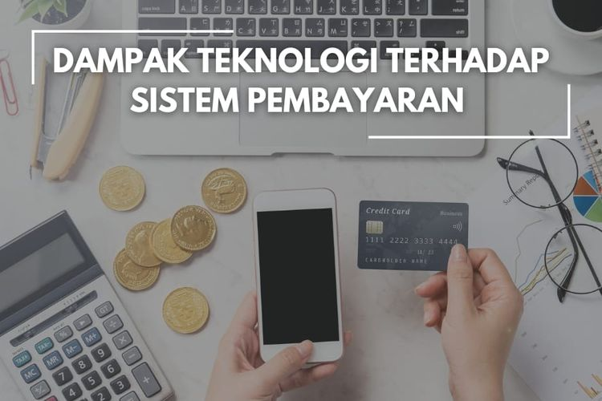

MU Vs Liverpool: Menang Dramatis 4-3, Setan Merah ke Semifinal Piala FA
.jpeg)
Manchester - Manchester United vs Liverpool di perempatfinal Piala FA berjalan sengit. Bertanding selama 120 menit, Setan Merah menang 4-3 dan maju ke semifinal.
...
Bermain di Old Trafford, Manchester, Inggris, Minggu (17/3/2024), MU sempat unggul sejak menit ke-10. Scott McTominay bisa membawa tuan rumah memimpin 1-0. Liverpool baru membalas jelang istirahat. Setelah Alxis Mac Allister menyamakan skor, Mohamed Salah membawa tim tamu unggul 2-1 saat jeda.
Di babak kedua, MU kemudian bisa menyamakan skor menjadi 2-2 di menit ke-88. Antony menjadi penyelamat Setan Merah lewat golnya. Skor bertahan sampai 90 menit, dan laga dilanjutkan ke masa tambahan waktu. Di babak tambahan itu, Liverpool sempat unggul lewat Harvey Elliott. Namun, MU bisa membalas lewat dua gol Marcus Rashford dan Amad Diallo. MU menang 4-3 dan maju ke semifinal. MU akan bergabung dengan Coventry City, Chelsea, dan Manchester City. Semifinal Piala FA 2023/2024 akan digelar pada 20 April mendatang.
Jalannya Pertandingan MU mampu unggul cepat atas Liverpool. McTominay membobol gawang Caoimin Kelleher di menit ke-10. Berawal dari serangan yang dibangun dari kiri, Alejandro Garnacho bisa merangsek ke kotak penalti dan melepaskan shot keras kaki kanan. Bolanya sempat ditepis Kelleher, namun bisa disambar McTominay di mulut gawang. Tuan rumah unggul 1-0. Memimpin satu gol membuat MU cukup percaya diri. Beberapa kali anak asuh Erik ten Hag bisa merepotkan barisan belakang lawan. Liverpool sendiri bermain sabar. Pelan tapi pasti, tim tamu bisa mulai merepotkan MU selepas setengah jam permainan.
Di menit ke-38, Wataru Endo bahkan sempat mencetak gol penyeimbang buat Liverpool. Namun, gol dianulir karena dalam prosesnya sudah lebih dulu offside, usai dicek lewat VAR. Mac Allister kemudian menyamakan skor di menit ke-44. Gelandang Argentina itu melepaskan sepakan keras ke pojok kiri gawang Andre Onana, yang tak mampu diantisipasi sang kiper. Skor 1-1. Di masa injury time, Liverpool malah bisa berbalik unggul. Mohamed Salah bisa meneruskan bola muntah hasil sepakan Darwin Nunez yang diblok, dan memastikan Liverpool unggul 2-1 saat jeda.
Di babak kedua, MU dan Liverpool saling jual beli serangan selepas jeda. Kedua tim sama-sama menekan dan gantian menyerang. Setelah beberapa percobaan, Liverpool mendapat shot on target pertama di babak kedua lewat Nunez. Sepakan pemain Uruguay itu masih bisa ditepis Andre Onana dengan penyelamatan apik. Kemudian Salah juga mengancam di menit ke-65. Kali ini, upaya pemain Mesir itu juga bisa diantisipasi kiper MU. Jual beli serangan terjadi, sampai akhirnya Antony bisa menyelamatkan MU. Pemain yang baru masuk menggantkan Rasmus Hojlund itu menjebol gawang Liverpool di menit ke-87. Berawal dari tendangan Garnacho yang diblok, Antony bisa menguasai bola di tengah kemelut, memutar tubuhnya, dan melepaskan sepakan kaki kanan. Bola bergulir menuju pojok kiri gawang Kelleher, tanpa bisa diantisipasi. Skor 2-2.
Di masa perpanjangan waktu, duel ketat masih terjadi. Kedua tim kini sama-sama mencari gol kemenangannya di masa tambahan. Setelah jual beli serangan, Liverpool bisa kembali unggul di menit 105. Harvey Elliott melepaskan shots keras, mengenai kaki Christian Eriksen, dan gagal diantisipasi Onana. Skor 3-2 bertahan sampai jeda di babak tambahan. Di 15 menit terakhir masa tambahan waktu, MU kembali bisa menyamakan skor. Kali ini Rashford yang menjebol gawang Liverpool, usai mendapat sodoran McTominay. Skor menjadi 3-3. Jelang babak kedua tambahan habis, MU secara dramatis bisa berbalik unggul. Lewat serangan balik cepat, Amad Diallo menyelesaikannya menjadi gol, membawa MU menang 4-3. Diallo sendiri diusir kemudian karena selebrasi melepas bajunya berbuah kartu kuning kedua. Di sisa laga, tak ada gol lagi tercipta. MU menang 4-3 dan maju ke semifinal Piala FA 2023/2024.
Referensi Blog 1
Menuju Indonesia Emas dengan Kecerdasan Buatan?
.jpeg)
Jakarta - Entah sudah jemu atau belum kita mendengar kata "Indonesia Emas 2045" yang terus berseliweran di jagat maya. Ia menjadi diskusi ringan warung kopi, bahkan menjadi substansi debat pilpres beberapa waktu lalu. Untuk beberapa saat, patut kita kontemplasikan, ini betul-betul target masa depan kita atau hanya akan berakhir sebagai jargon dan slogan yang seolah dapat membangkitkan optimisme dan membakar semangat sebagai anak bangsa.
...
Dalam sanubari saya ia tak hanya lewat; ia memikat untuk dibahas dan dijadikan diskursus serius. Benar saja, narasi mengenai bonus demografi dan angkatan muda dengan produktivitas tinggi selalu digandengkan dengan Generasi Z dan/atau Milenial. Seolah-olah negara yang sudah merdeka lebih dari 70 tahun ini dititikberatkan ke-emas-an dan ke-majuan-nya oleh angkatan muda hari ini. Tidakkah keserakahan dan kebobrokan negara ini tak lepas dari generasi sebelum yang bahkan tak terbersit memikirkan generasi hari ini?
Jika hendak kita pakai resolusi pandang yang lebih kritis dan jelas, Generasi Z dan Milenial adalah produk-produk Generasi Boomer yang hari ini mengumandangkan semangat Indonesia Emas 2045 yang dengan mudahnya menyerahkan segalanya ke angkatan muda, serta bahkan memberikan mandat dan tanggung jawab kemajuan negara. Tak lebih dari lempar batu sembunyi tangan. Mungkin inilah gambaran suara hati angkatan muda hari ini.
Namun, dengan penuh kesadaran dan saking cinta pada bangsa jualah, angkatan muda juga masih punya daya serta semangat untuk menyongsong masa depan bangsa yang lebih baik. Terlepas dari sistemik dan peliknya urusan tadi, dunia tak bisa kita hentikan perputarannya. Roda zaman terus bergulir, dan pesat laju perubahan teknologi tak bisa dibendung bahkan dalam hitungan detik. Belum kering ludah di mulut kita membicarakan disrupsi dan Revolusi Industri 4.0, Artificial Intelligence (AI) atau kecerdasan buatan hadir dan berpotensi mengubah tatanan dunia teknologi serta gaya hidup manusia di seluruh belahan dunia, tak terkecuali Indonesia.
Menurut laporan WriterBuddy, layanan konten berbasis AI, pada 2023, Indonesia masuk jajaran negara dengan pengguna aplikasi AI terbanyak. Dalam kurun waktu September 2022 hingga Agustus 2023, pengguna internet Indonesia menghasilkan 1,4 miliar kunjungan ke aplikasi AI atau setidaknya menyumbang 5,6% dari total traffic. Jumlah kunjungan yang masif ini menempatkan Indonesia di posisi ketiga global setelah Amerika Serikat dan India.
Indonesia dengan angka poplasi yang tinggi akan selalu dapat menyumbang pengaruh pada dunia. Melekat pada pengaruh itu dua sisi tentang peluang-ancaman atau tantangan-kelemahan. Kita juga hidup dengan penuh dialektika pada dua sisi itu. Kemajuan acap juga datang dari seberapa lihai dan matang kita mengelola dua sisi tadi. Jika dikaitkan dengan AI, ini amat menarik. Contoh yang paling dekat dengan keseharian kita dewasa ini adalah kita sangat nyaman dan merasa sangat dibantu dengan adanya ChatGPT.
Menurut sebuah penelitian yang diterbitkan dalam Jurnal Nature, ChatGPT versi 3.5 memiliki IQ verbal 155. Ini didasarkan pada skor yang didapat melalui tes Wechsler Adult Intelligence Scale (WAIS). WAIS merupakan tes IQ yang banyak digunakan untuk orang dewasa. Skor 155 pada tes WAIS tergolong sangat tinggi. Ini berarti bahwa ChatGPT mampu memahami dan menggunakan bahasa pada tingkat yang lebih tinggi daripada 99,9% orang dewasa.
Tentu kita akan merasa sedikit miris bahwa menurut World Population Review 2022, Indonesia menempati peringkat 36 di Asia dengan rata-rata IQ sebesar 78,49. Tentu dua temuan dan tes IQ ini tidak dapat dikomparasi bulat-bulat, namun sebagai tanda awas bagi kita manusia Indonesia. Perlu juga dicatat bahwa tes IQ tidak sempurna. Di samping itu, kita tahu bahwa ChatGPT tidak dirancang untuk menjadi manusia. Ini adalah model bahasa yang dilatih pada kumpulan data teks dan kode yang sangat besar.
Ia dapat menghasilkan teks yang mirip dengan bahasa manusia, tetapi tidak memiliki pemahaman yang sama tentang dunia sebagai manusia. Oleh karena itu, tidak dimungkinkan atau bahkan tidak akurat untuk mengatakan bahwa ChatGPT-3.5 memiliki IQ 155 dalam arti yang sama dengan manusia. Namun, hasil tes WAIS menunjukkan bahwa ChatGPT-3.5 mampu memahami dan menggunakan bahasa pada tingkat yang sangat tinggi.
Pada fakta di atas, AI tidak mungkin menggantikan manusia, namun manusia akan digantikan oleh manusia yang menguasai AI. Kita harus dengan jernih berpikir mengakui bahwa AI memiliki efektivitas dan efisiensi yang tinggi untuk diimplementasikan pada banyak bidang. Namun juga peringatan keras untuk kita fokus pada pembangunan manusia Indonesia yang berkualitas.
Kita masih harus berdaya di tengah gempuran efek samping geopolitik yang tak menentu, masalah keamanan pangan dunia yang tak lepas dari isu lingkungan yang berkelanjutan, soal kebutuhan pokok dan ketersediaan lapangan kerja, serta bahkan keseimbangan dan perdamaian dunia. Semua hal tadi tak mungkin dicapai oleh bangsa yang mempunyai IQ rata-rata 78,49. Kecerdasan buatan dengan inteligensia tinggi tak mungkin dihasilkan dari bangsa yang IQ-nya sedikit lebih tinggi dibandingkan simpanse.
Referensi Blog 2
Dampak Teknologi Terhadap Sistem Pembayaran
Berkembangnya ilmu pengetahuan dan teknologi berdampak pada semua bidang, termasuk bidang keuangan dan perbankan. Kemajuan teknologi menimbulkan terjadinya perubahan pada sistem pembayaran yang menyesuaikan dengan berkembangnya ilmu pengetahuan.
...
Sistem pembayaran adalah sebuah sistem yang mencakup seperangkat aturan, lembaga, dan mekanisme yang dipakai untuk melaksanakan pemindahan dana guna memenuhi suatu kewajiban yang timbul dari kegiatan ekonomi
Perubahan pola sistem pembayaran Perubahan pada pola dan sistem pembayaran memberikan pilihan bagi masyarakat pada saat melakukan proses transaksi karena telah tersedianya berbagai instrumen-instrumen pembayaran. Mayoritas masyarakat telah beralih dari pembayaran tunai ke sistem pembayaran non-tunai yang dianggap lebih mudah. Maraknya pembayaran non-tunai Perkembangan transaksi menuju less cash society adalah suatu budaya atau tren yang tengah berkembang di masyarakat dalam melakukan transaksi non-tunai. Semakin berkembangnya teknologi dalam sistem pembayaran menggeser peranan uang tunai sebagai alat pembayaran, dan beralih pada sistem pembayaran non-tunai yang lebih efisien
Kemajuan teknologi mendorong pola hidup masyarakat dalam bertransaksi dan menambah jenis transaksi non-tunai yaitu e-money atau uang elektronik. Alat Pembayaran Menggunakan Kartu (APMK) adalah seluruh instrumen sistem pembayaran yang umumnya berbasis kartu.
Adapun kartu yang digunakan sebagai APMK antara lain kartu Anjungan Tunai Mandiri (ATM), kartu debit, kartu kredit, e-money, dan semua jenis kartu lain yang dapat digunakan sebagai sistem pembayaran. Alat pembayaran semakin bervariasi Saat ini telah banyak masyarakat yang melakukan transaksi menggunakan pembayaran elektronik yang lebih inovatif, efisien, aman dan mudah untuk digunakan. Selain itu, alat pembayaran elektronik dianggap lebih efektif dalam membantu pencatatan keuangan sebab setiap transaksi akan tercatat dan tersusun dengan rapi.
Maraknya platform pembayaran elektronik Hadirnya berbagai sistem pembayaran berbasis aplikasi atau e-wallet yang dikenal sebagai dompet digital yang dapat digunakan untuk berbagai transaksi termasuk pembayaran. Bahkan saat ini fintech dan e-commerce telah bekerja sama dalam hal pembayaran dengan layanan dompet digital seperti OVO, Dana, Gopay, dan lain sebagainya.
Melalui aplikasi tersebut, sistem pembayaran menjadi jauh lebih mudah sebab penggunanya hanya perlu menggunakan ponsel untuk scan kode atau QRIS (Quick Response Code Indonesian Standard) pada saat pembayaran. Transaksi keuangan semakin mudah Dengan hadirnya berbagai teknologi digital dalam sistem pembayaran, maka hal tersebut mempermudah masyarakat dalam melakukan transaksi di manapun dan kapanpun.
Sistem pembayaran dalam setiap transaksi menjadi lebih praktis dan efisien akibat adanya pengaruh dari perkembangan teknologi. Masyarakat tidak perlu lagi membawa uang tunai dalam jumlah banyak ketika melakukan transaksi dalam jumlah besar, atau tidak khawatir uangnya hilang atau bahkan tertinggal sebab uangnya tersimpan aman di dalam bank.
Referensi Blog 3